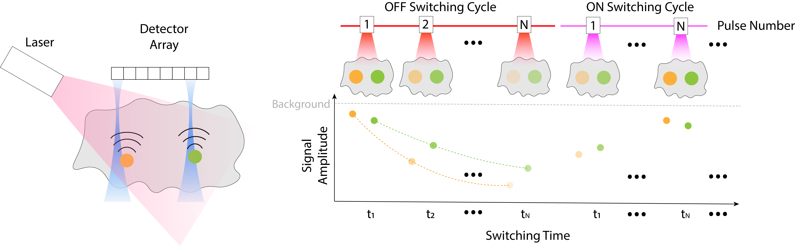

Background¶
In the previous section, we have developed an unmixing framework that reconstructs spatial intensity maps of photo-switching reporters from acoustically reconstructed PA images. Validated on various phantoms and experiments under a tomographic setup, this framework is able to account for light fluence distribution within the sample, and applicable to AR-PAM (with customized fluence computation).
In this section, we extend it to incorporate the acoustic forward model specific to photo-switching AR-PAM. The result is a global framework that allows us to directly reconstruct concentration maps of reporters from acoustic signals.
Principles of Photo-Switching PAM¶
Similar to photo-switching PAT, photo-switching PAM relies on a scheduled illumination of ON and OFF switching pulses. Each laser pulse gives rise to a complete PA process. Upon illumination, photons propagate through tissue, undergoing absorption and scattering to form a spatially varying fluence field. Chromophores absorb some of the optical energy that is converted to heat, leading to a thermal expansion and local rise in pressure. These pressure waves propagates as ultrasound and are detected by a linear transducer array at tissue surface. The resulting measurements are a time series of acoustic signals per pulse, from which one can recover spatial distribution maps of individual species. The setup and principle of photo-switching PAM are shown in Fig. 29.

Fig. 29 (Left) Experimental setup. The sample being imaged is represented by the gray object. Orange and green discs represent two species of photo-switching reporters. Pink area represents the diffuse illumination from the laser. Linear row of squares above the sample represents the detector array, with each square a single-element transducer. The sensitivity field of two of transducers in the array is depicted by the blue areas. Curves above the reporters indicate generated acoustic waves. (Right) Principle of photo-switching. OFF and ON switching cycles (also wavelengths used in the cycle) are indicated by color red and magenta, respectively. On top, numbers on the lasers represent pulse number within a cycle. On the bottom, \(t_1, t_2, \ldots, t_N\) represent discrete time points during a switching cycle. Dashed curves with the same color-code as reporters during the OFF cycle illustrate evolution of the amplitude of PA signals. The dashed gray horizontal line indicates evolution of a point in the background.¶
State of the Art¶
Existing temporal unmixing methods in PAT proceed in a two-step approach [27, 135, 136, 137, 138, 139]. They first solve a series of acoustic inversion problems to reconstruct PA images from the measurements at each switching pulse. Then, they apply an unmixing algorithm to the stack of reconstructed images to recover spatial maps of protein species.
In quantitative PAT without photo-switching, researchers have concerned themselves with mathematical modeling and numerical simulations in the tomographic setting [168, 169, 170]. There, methods to recover unknown optical absorption maps from acoustic measurements can be classified into two categories [159]. The first category models the optical and acoustic processes individually, and then, solves two sequential inverse problems (referred to as the two-step, or two-stage approach). The second category joins the forward operators of the two processes together as one composite operator and solve a unified inverse problem (referred to as the one-step, or global, or single-stage approach) [168, 169, 170]. Haltmeier et al. [170] showed that the global approach improves the reconstruction quality compared to its two-step counterpart.
Contribution¶
We present a mathematical framework that unifies the full forward imaging process, from optical illumination to acoustic detection, with a dedicated quantitative unmixing and global reconstruction algorithm. Our focus is a novel AR-PAM setup featuring widefield illumination from a fixed laser and a linear ultrasound transducer array, combined with photo-switching protein reporters.
The global forward operator encapsulates the entire imaging pipeline during an OFF-switching cycle. It comprises two components:
An optical model, building upon our first contribution, that describes the temporal evolution of reporter signals and incorporates local fluence and intrinsic photo-switching kinetics.
An acoustic model, based on the synthetic aperture focusing technique (SAFT), that accounts for transducer properties via spatial integration with its spatial response over the wavefront and temporal convolution with its electrical response.
Computationally, we efficiently implement the acoustic forward model as a matrix-free linear operator to avoid computational bottlenecks that existing model-based approaches face.
Then, we follow the model-based approach and formulate the inverse problem of recovering spatial concentration maps from acoustic measurements as a minimization problem in which we incorporate prior information as sparsity-promoting regularization. We solve the global inverse problem via a proximal-gradient-based iterative algorithm.
We validate our framework through numerical simulations and show the performance of our proposed regularized global unmixing method. Finally, we explain the implementation of our models and provide a computational analysis and speed benchmark.